MBC Antigravity 교육
코딩을 모르는 사람이 말로 지시해서 실제로 돌아가는 결과물을 만드는 것 — 그게 오늘의 목표입니다. 2주차에서 배운 Gemini Enterprise가 찾고 요약하는 도구였다면, Antigravity는 만드는 도구입니다.
오늘의 목표와 진행 방식
오늘 여러분은 코드를 한 줄도 직접 쓰지 않고 실제로 동작하는 결과물을 만들게 됩니다. Antigravity에게 한국어로 "이런 걸 만들어줘"라고 말하면, 에이전트가 계획을 세우고 · 파일을 만들고 · 실행해서 확인까지 합니다. 여러분이 할 일은 무엇을 원하는지 정확히 말하고, 결과를 검토해서 승인하는 것입니다.
오늘 만들어 볼 것
- 명령줄에서 뉴스를 가져오는 작은 프로그램 (공통 과제 — 아티팩트를 관찰하기 위한 예제)
- 본인 업무에 쓸 실제 산출물 1개 — 데이터 정리 도구, 문서 자동 생성, 간단한 사내용 웹 페이지 등
- 매일·매주 자동으로 돌아가는 예약 작업 1개
진행 방식
모든 실습은 공통 과제(전원 동일) → 개인 과제(자기 업무 적용) 2단계로 진행합니다. 각 실습 끝의 체크리스트를 눌러 진행 상황을 표시할 수 있고, 코드·프롬프트 블록은 복사 버튼으로 그대로 붙여넣어 사용합니다. 막히면 즉시 조별 멘토를 부르세요 — 오늘은 혼자 해결하는 시간이 아닙니다.
실습 1 · 설치와 네이버웍스 SSO 로그인
목표: Antigravity를 설치하고 사내 계정으로 로그인해 Agent Platform 라이선스가 붙은 상태까지 도달합니다. 오늘 나머지 실습이 전부 여기에 달려 있으므로, 막히면 즉시 손을 들어주세요.
1-1. 다운로드·설치 (8분)
- 브라우저에서 https://antigravity.google/download 접속 — 새 탭으로 열립니다
- 본인 운영체제(Windows / macOS)용 설치 파일 다운로드
- 다운로드한 파일을 실행해 설치 완료
1-2. Use business account 클릭 (3분)
설치 후 첫 실행 화면입니다. 파란색 Continue with Google이 아니라
아래의 Use business account를 클릭합니다.
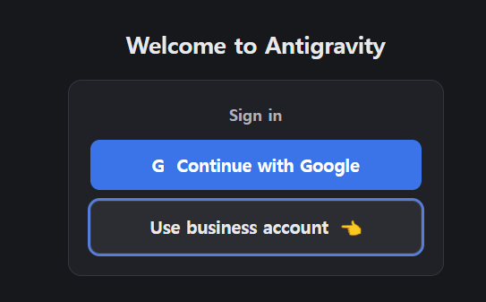
Use business account1-3. Use advanced SSO config 선택 (3분)
다음 화면에서도 마찬가지입니다. 파란색 Continue with Google Cloud가 아니라
아래 Use advanced SSO config를 누릅니다. 여기가 우리 환경이 갈리는 지점입니다.
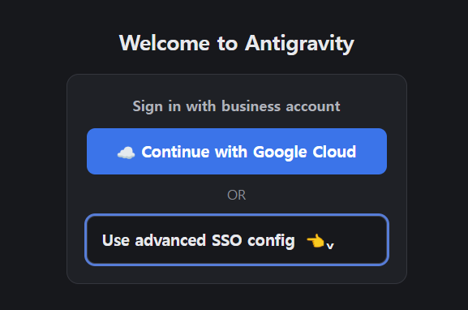
1-4. WIF Config 입력 → Sign in with SSO (10분)
WIF Config 칸에 아래 문자열을 복사해서 그대로 붙여넣고
Sign in with SSO를 클릭합니다. 직접 타이핑하면 오타로 실패하기 쉽습니다.
locations/global/workforcePools/naverworks/providers/naverworks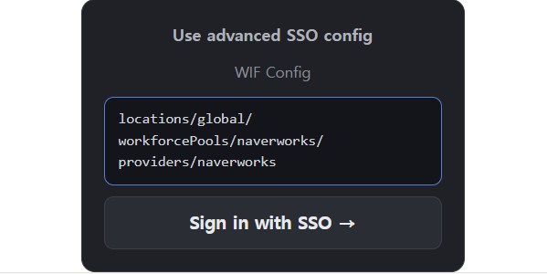
Sign in with SSO버튼을 누르면 브라우저가 자동으로 열립니다. 열린 창에서 네이버웍스 계정으로 로그인하세요. 로그인이 끝나면 브라우저가 "돌아가도 좋다"는 안내를 띄우고, Antigravity 앱으로 자동 복귀합니다.
1-5. 라이선스 화면에서 Other 선택 (2분)
Quota pool exhausted 오류가 납니다.
사용한 만큼 과금되는 Agent Platform 라이선스로 변경되었으니,
이미 설정한 분도 오류가 나면 로그아웃 후 이 순서대로 다시 로그인하세요.로그인 후 Select your license 창이 나오면 위에 보이는 Gemini Enterprise Plus를 고르지 말고,
아래의 Other →를 누릅니다.
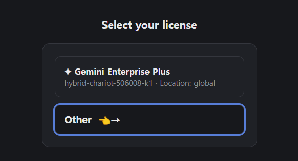
Other →1-6. Google Cloud 프로젝트 입력 → Next (2분)
Provide Google Cloud Project 칸에 아래 프로젝트 ID를 복사해서 그대로 붙여넣고
Next를 누릅니다.
hybrid-chariot-506008-k1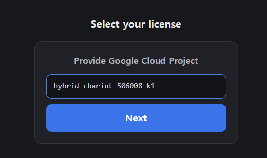
Next1-7. Global · Agent Platform 선택 → Next (2분)
이어서 나오는 화면에서 Choose Region은 Global을,
Select License는 Gemini Enterprise Plus가 아니라
Agent Platform (Pay as you go)을 선택하고 Next를 누릅니다.
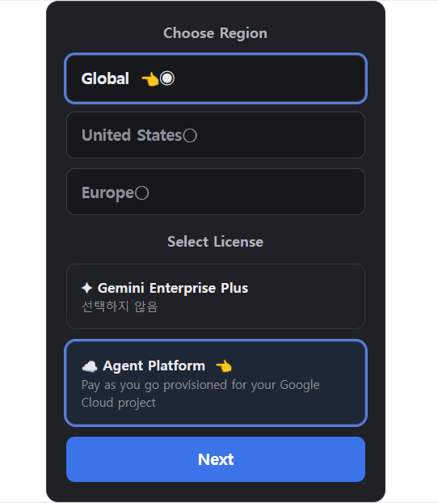
Global, License는 Agent Platform1-8. 약관 확인 → Finish, 로그인 확인 (3분)
Terms of Service & Data Use 화면에서 Finish를 누르면 로그인이 끝납니다.
좌측 하단 톱니바퀴(Settings) → Account에서
라이선스가 Agent Platform으로 표시되면 성공입니다.
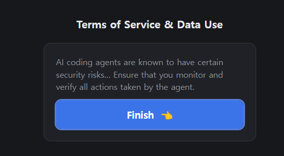
Finish- Antigravity 설치 완료
- Use business account → Use advanced SSO config 경로로 진입
- WIF Config 붙여넣기 후 네이버웍스 로그인 성공
- 라이선스 설정 완료, 메인 화면 진입
- Other → 프로젝트 ID 입력 → Global · Agent Platform 선택 완료
- Settings → Account에서 Agent Platform 라이선스 확인
1. Antigravity란 무엇인가
한 문장으로: 말로 지시하면 스스로 계획을 세워 일을 해내는 개발 환경입니다. 구글은 이것을 에이전틱 IDE라고 부릅니다. 기존 개발 도구가 "사람이 코드를 쓰고 도구는 도와주는" 구조였다면, Antigravity는 에이전트가 일을 하고 사람은 검토·승인하는 구조입니다.
2주차에 배운 도구들과의 차이
| 도구 | 무엇을 하나 | 결과물 |
|---|---|---|
| Gemini Enterprise 검색 | 사내 문서에서 찾고 요약 | 답변 텍스트 |
| Gemini Enterprise 에이전트 | 정해진 업무 흐름을 반복 수행 | 처리된 업무 |
| Antigravity | 지시한 것을 직접 만들어 실행 | 동작하는 프로그램 · 파일 · 문서 |
즉 Gemini Enterprise가 있는 것을 다루는 도구라면, Antigravity는 없는 것을 만드는 도구입니다.
비개발자에게 이게 왜 쓸모 있나
"개발 도구"라고 하면 남 얘기 같지만, 실제로는 다음과 같은 일들이 코딩 지식 없이 가능해집니다.
- 반복 작업 자동화 — 매주 받는 엑셀 20개를 하나로 합쳐 요약표 만들기
- 형식 변환 — 녹취 텍스트를 자막 규격(21자×3줄)으로 일괄 변환
- 자료 수집 — 특정 주제 뉴스를 매일 모아 정리해두기
- 간단한 사내 도구 — 부서 내에서만 쓰는 조회 페이지, 체크리스트 앱
- 문서 작업 — 여러 자료를 근거로 보고서 초안 작성 및 표·차트 생성
화면 구성
로그인하면 아래와 같은 화면이 나타납니다. 크게 왼쪽 프로젝트 목록과 오른쪽 대화창으로 나뉩니다. 대화창에 한국어로 지시하면 됩니다.
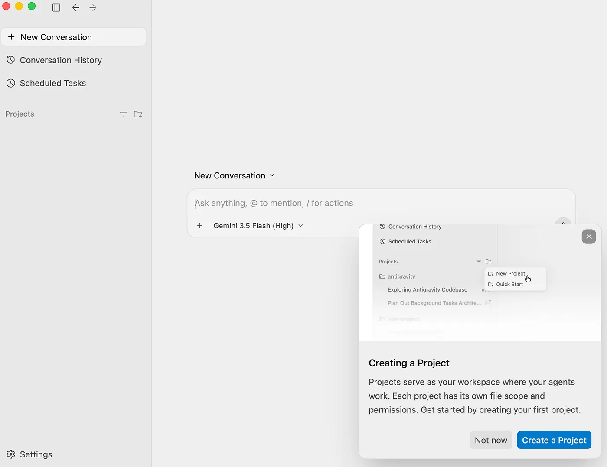
- 모델 선택 — 대화창 하단에서 사용할 AI 모델을 고릅니다 (기본값 그대로 두면 됩니다)
+·@·/— 파일 첨부, 특정 파일·에이전트 지목, 명령어 실행
2. 프로젝트 — 에이전트의 작업 범위
Antigravity는 프로젝트 단위로 움직입니다. 프로젝트는 쉽게 말해 "에이전트가 들여다봐도 되는 폴더"를 지정하는 것입니다. 이렇게 범위를 정해두면 에이전트가 엉뚱한 파일을 건드리지 않고, 필요한 맥락만 정확히 봅니다.
- 여러 폴더를 묶을 수 있습니다 — 예: 자료 폴더 + 결과물 폴더를 한 프로젝트로
- 프로젝트마다 설정이 완전히 분리됩니다 — A 프로젝트의 권한이 B에 영향을 주지 않습니다
실습 2 · 첫 프로젝트 만들기
목표: 오늘 하루 작업할 내 프로젝트를 만들고, 에이전트에게 첫 지시를 내려 대화가 되는 것을 확인합니다.
2-1. 작업 폴더 만들기 (3분)
먼저 윈도우 탐색기(또는 Finder)에서 폴더를 하나 만듭니다. 에이전트가 여기에 결과물을 저장합니다.
- 위치: 문서 폴더 아래 (또는 바탕화면)
- 폴더 이름:
my-first-project— 영문·소문자·하이픈으로 만드세요
2-2. 프로젝트 등록 (10분)
- 왼쪽 사이드바에서 Projects 옆의 폴더+ 아이콘에 마우스를 올리면
Create New Project라고 표시됩니다 — 클릭 - 폴더 선택 창이 열리면 방금 만든
my-first-project폴더를 선택 - 이것으로 끝입니다 — 프로젝트가 Projects 목록에 나타나고, 이름은 폴더 이름으로 자동 지정됩니다
2-3. 첫 대화 — 에이전트가 살아있는지 확인 (7분)
대화창에 아래 문장을 그대로 넣어보세요. 한국어로 말해도 됩니다.
이 프로젝트 폴더에 hello.txt 파일을 만들고, 그 안에 오늘 날짜와 내 이름을 써줘.에이전트가 무엇을 할지 설명하고, 파일을 만든 뒤 결과를 보고합니다. 탐색기에서 폴더를 열어 파일이 실제로 생겼는지 직접 확인하세요 — 이게 핵심입니다. 화면 속 이야기가 아니라 내 PC에 진짜 파일이 만들어집니다.
my-first-project폴더 생성- 프로젝트 등록 완료 (Create New Project → 폴더 선택)
- 첫 지시로 hello.txt 생성 성공
- 탐색기에서 실제 파일 확인
개인 과제 — 내 업무용 목업 데이터 프로젝트 만들기
방금 배운 흐름을 한 번 더 반복하며, 이번엔 실습 3·4에서 계속 쓸 내 데이터를 준비합니다.
- 탐색기에서 새 폴더
my-data를 만들고, Create New Project로 등록 (프로젝트 2개가 된 상태) - 새 프로젝트의 대화창에서 본인 업무와 비슷한 가상(목업) 데이터를 만들게 합니다
내 업무에서 다루는 [ 자료 종류 ]와 비슷한 가상 데이터를 만들어줘.
- 형식: [ 엑셀(CSV) / 텍스트 파일 / 문서 ]
- 분량: [ 30건 / 파일 4개 ] 정도
- 실제 개인정보는 넣지 말고 전부 가상으로예시: 시청자 의견 30건 CSV · 주간보고 4주치 · 출연진 섭외 명단 · 회의록 3개 — 이 데이터는 실습 3·4에서 그대로 재사용합니다.
my-data폴더 생성 + 두 번째 프로젝트 등록- 목업 데이터 생성 완료, 탐색기에서 파일 확인
3. 아티팩트 — 신뢰의 격차 해소
에이전트가 뭔가 만들어줬는데, 그게 제대로 된 건지 어떻게 아나요? 코드를 못 읽는 사람에게 결과물을 던져주면 확인할 방법이 없습니다. 이것을 신뢰의 격차(Trust Gap)라고 합니다.
Antigravity의 해법은 작업 과정을 사람이 읽을 수 있는 문서로 남기는 것입니다. 이 문서들을 아티팩트라고 부릅니다. 코드를 몰라도 아티팩트만 읽으면 무엇을 · 왜 · 어떻게 했는지 파악하고 승인 여부를 판단할 수 있습니다.
아티팩트 5종
| 종류 | 언제 나오나 | 무엇을 확인하나 |
|---|---|---|
| Task List | 작업 시작 전 | 에이전트가 할 일 목록 — 내 의도와 맞는지 |
| Implementation Plan | 작업 시작 전 | 구체적 설계 — 어떤 파일을 만들고 무엇을 쓸지 |
| Walkthrough | 작업 완료 후 | 완료 보고서 — 무엇이 바뀌었고 검증은 어떻게 했는지 |
| Code diffs | 파일 수정 시 | 변경 전후 비교 (코드를 몰라도 얼마나 바뀌었는지는 보입니다) |
| Screenshots | 화면이 있는 결과물 | 실제 동작 화면 — 비개발자가 가장 확인하기 쉬운 것 |
승인 단계가 있는 이유
기본 설정에서는 에이전트가 계획을 먼저 보여주고 승인을 기다립니다. 귀찮게 느껴질 수 있지만, 여기서 방향이 틀어진 것을 미리 잡는 게 훨씬 쌉니다. 계획 단계에서 "아니, 그게 아니라 이렇게 해줘"라고 고치는 것이, 다 만든 다음 뒤엎는 것보다 빠릅니다.
실습 3 · 바이브 코딩으로 첫 산출물 만들기
목표: 말로 지시해서 실제로 동작하는 결과물을 만들고, 그 과정에서 나오는 아티팩트를 직접 읽어보며 검토·승인하는 흐름을 몸에 익힙니다.
3-1. 공통 과제 — 뉴스 수집 프로그램 (12분)
전원 동일한 지시로 시작합니다. 결과물 자체보다 에이전트가 일하는 방식을 관찰하는 것이 목적입니다.
명령줄에서 실행하면 구글 뉴스의 최신 기사를 가져와서 보여주는 간단한 프로그램을 만들어줘. 결과는 제목과 링크만 깔끔하게 출력해줘.지시를 넣으면 에이전트가 바로 코드를 쓰지 않고 계획부터 보여줍니다. 다음 순서로 관찰하세요.
- Task List가 나타나면 읽어봅니다 — 몇 단계로 나눴고, 내가 원한 것과 맞는지
- 승인을 누르면 에이전트가 파일을 만들기 시작합니다
- 중간에 터미널 명령 실행 승인을 물어보면 내용을 보고 허용합니다
- 완료되면 Walkthrough를 읽습니다 — 무엇을 만들었고 어떻게 확인했는지
다른 방법으로 해봐라고 말해주면 됩니다.3-2. 아티팩트 읽기 훈련 (6분)
만들어진 결과물을 놓고 아래 3가지를 직접 찾아보세요. 옆 사람과 서로 설명해보면 더 좋습니다.
| 찾을 것 | 확인 질문 |
|---|---|
| Task List | 에이전트가 몇 단계로 나눴나? 빠뜨린 단계는 없나? |
| Walkthrough | "어떻게 검증했는지"가 적혀 있나? 실제로 실행해봤나? |
| 만들어진 파일 | 탐색기에서 프로젝트 폴더를 열어 파일이 몇 개 생겼나? |
그리고 결과물을 한 번 고쳐봅니다 — 대화를 이어서 다음처럼 요청하세요.
결과를 5개만 보여주고, 각 기사 앞에 번호를 붙여줘.이미 만든 것을 대화로 계속 고칠 수 있다는 것이 핵심입니다. 처음부터 완벽하게 지시할 필요가 없습니다.
3-3. 공통 과제 — 흩어진 파일을 하나의 문서로 (12분)
이번엔 프로그램이 아니라 문서를 만듭니다. 회의록·메모·주간보고처럼 흩어진 파일들을 에이전트가 읽고 하나의 정리된 문서로 통합하는 흐름 — 실무에서 가장 자주 쓰게 될 패턴입니다. 전원 동일한 제공 샘플으로 진행합니다.
샘플 다운로드 — 가상의 방송 프로그램 개편 프로젝트 파일 4개 (회의록 2 · 주간보고 1 · 메모 1) 목업 데이터 다운로드 (.zip)
- 내려받은
mockup-data.zip의 압축을 풀면 자료 폴더가 나옵니다 - 자료 폴더를 통째로
my-first-project폴더 안으로 옮깁니다 - 파일 4개를 열어 내용을 대략 훑어봅니다 — 뭐가 겹치고 뭐가 서로 어긋나는지 알아야 결과를 검증할 수 있습니다
그다음 통합을 지시합니다.
자료 폴더 안의 파일을 전부 읽고 하나의 정리 문서로 만들어줘.
- 중복된 내용은 한 번만, 서로 어긋나는 내용은 표시해줘
- 목차를 달고, 각 내용 끝에 어느 파일에서 왔는지 출처를 적어줘
- 결과는 "정리.md" 파일로 저장해줘완성되면 3가지를 검증합니다: ① 세 파일에 반복된 "제작비 5% 절감"이 한 번만 나오는가 ② 편성 시간이 1차(금 10시)와 2차(토 9시)에서 어긋난 것이 표시되었는가 ③ 출처 표기가 맞고, 원본에 없는 내용이 끼어들지 않았는가. 특히 ③ — AI가 그럴듯하게 지어낸 문장이 없는지 확인하는 습관이 중요합니다.
3-4. 개인 과제 — 내 업무에 적용 (10분)
이번엔 실습 2에서 만든 my-data 프로젝트의 목업 데이터로 내 업무 가공을 시켜봅니다 — 통합이 아니라 분류·요약표·차트 등
본인 업무에서 실제로 필요한 형태를 지시해보세요. 아래 형식을 채워서 지시하면 결과가 훨씬 좋아집니다.
[ 어떤 자료를 ] 가지고 [ 무엇을 ] 하고 싶어.
결과물은 [ 어떤 형태 ]로 만들어줘.
주의할 점: [ 꼭 지켜야 할 조건 ]작성 예시
엑셀 파일에 든 시청자 의견 300건을 가지고 유형별로 분류하고 싶어.
결과물은 유형·건수·대표 의견 3개가 든 표로 만들어줘.
주의할 점: 개인정보(이름, 전화번호)는 결과에 포함하지 마.시청자 의견 정리해줘테스트용 가상 데이터 30건을 만들어줘라고 요청하세요.- 공통 과제 완료 — 뉴스 프로그램이 실행됨
- Task List를 읽고 승인해봄
- Walkthrough에서 검증 내용 확인
- 대화를 이어서 결과물 1회 수정
- 샘플 다운로드 → 통합 문서(정리.md) 완성
- 통합 문서 3가지 검증 (중복·어긋남·출처)
- my-data 데이터로 내 업무 가공 1개 완성
4. 슬래시 명령어
대화창에 /를 입력하면 자주 쓰는 기능이 목록으로 뜹니다.
매번 길게 설명하지 않아도 되는 단축 지시라고 보면 됩니다.
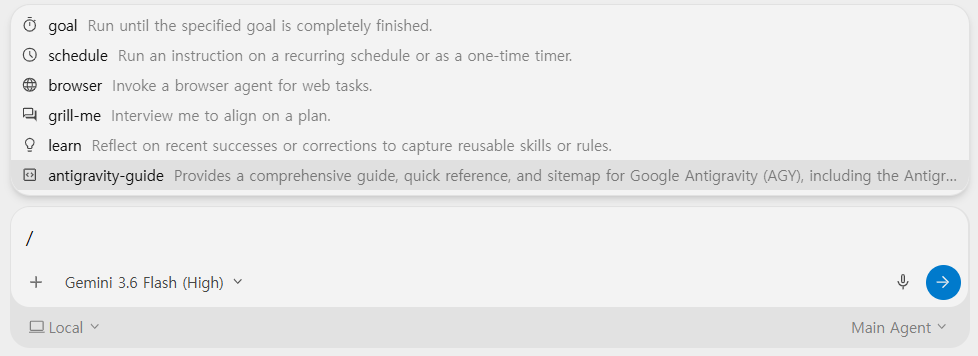
/ 입력 시 나타나는 명령어 목록| 명령어 | 하는 일 | 비개발자 활용 예 |
|---|---|---|
/goal | 목표가 완전히 끝날 때까지 알아서 계속 실행 | 중간에 멈추지 않고 한 번에 끝내고 싶을 때 |
/grill-me | 에이전트가 거꾸로 나에게 질문해서 계획을 다듬음 | ⭐ 뭘 원하는지 막연할 때 가장 유용 |
/schedule | 반복 일정 또는 타이머로 실행 예약 | 매일·매주 자동으로 돌릴 작업 (실습 5) |
/browser | 웹 브라우저를 직접 조작하는 에이전트 호출 | 웹사이트에서 자료 수집 (※ 조직 정책상 차단될 수 있음) |
/learn | 잘된 작업을 규칙으로 저장해 다음에 재사용 | 내 업무 방식을 학습시켜 반복 지시 줄이기 |
/antigravity-guide | Antigravity 사용법 안내 제공 | 막혔을 때 먼저 물어보기 |
/grill-me를 꼭 써보세요
비개발자가 가장 어려워하는 건 "무엇을 어떻게 지시해야 할지 모르겠다"입니다.
/grill-me는 에이전트가 면접관처럼 질문을 던져 원하는 바를 끌어내 줍니다.
막연한 아이디어만 있을 때 이걸로 시작하면 계획이 잡힙니다.실습 4 · 슬래시 명령어로 업무 산출물 만들기
목표: /grill-me로 막연한 아이디어를 구체적 계획으로 바꾸고,
/goal로 끝까지 완성시킵니다.
4-1. /grill-me — 에이전트에게 인터뷰 받기 (12분)
대화창에 /grill-me를 입력하고, 뒤에 막연한 아이디어를 그대로 적습니다.
/grill-me 부서에서 매주 쓰는 업무 보고서를 자동으로 만들고 싶은데 어떻게 해야 할지 모르겠어에이전트가 질문을 던지기 시작합니다. 성실하게 답해주세요 — 답이 구체적일수록 결과가 좋아집니다.
| 에이전트가 물어볼 만한 것 | 이렇게 답하면 좋습니다 |
|---|---|
| 어떤 자료를 쓰나요? | "엑셀 파일 1개, 주간 실적이 행으로 들어있음" |
| 결과물 형태는? | "A4 한 장 분량 문서, 표 1개 + 요약 3줄" |
| 누가 보나요? | "부서장 보고용, 숫자 근거가 명확해야 함" |
인터뷰가 끝나면 에이전트가 정리된 계획을 제시합니다. 이 계획이 처음 막연했던 한 문장과 얼마나 달라졌는지 비교해보세요.
4-2. /goal — 끝까지 완성시키기 (13분)
계획이 마음에 들면 /goal로 실행합니다. 중간에 멈추지 않고 목표 달성까지 진행합니다.
/goal 방금 정리한 계획대로 만들어줘. 샘플 데이터는 가상으로 만들어서 테스트까지 해줘./goal 사용 시 주의
자율성이 높은 만큼 진행 상황을 지켜보세요. 방향이 어긋나면 즉시 중단하고 다시 지시하면 됩니다.
파일을 지우거나 덮어쓰는 작업을 물어보면 내용을 반드시 읽고 승인하세요.4-3. /learn — 방식 저장하기 (5분)
결과가 만족스러웠다면, 그 방식을 저장해 다음에 재사용할 수 있습니다.
/learn 방금 보고서를 만든 방식을 규칙으로 저장해줘. 다음에 같은 요청을 하면 이 형식을 따르도록.이렇게 저장해두면 다음 주에는 "지난번 형식대로 이번 주 보고서 만들어줘" 한 마디면 됩니다. 1주차에 배운 Skill과 같은 개념입니다 — 반복 지시를 자산으로 바꾸는 것입니다.
/grill-me로 인터뷰 진행, 질문에 답변 완료- 정리된 계획을 처음 아이디어와 비교해봄
/goal로 결과물 완성/learn으로 방식 저장
5. 예약 실행 (Schedule)
지금까지는 내가 말할 때마다 에이전트가 움직였습니다. 예약 실행을 쓰면 정해진 시각에 알아서 일합니다. 매일 아침 자료를 모아두거나, 매주 월요일 보고서 초안을 만들어두는 식입니다.
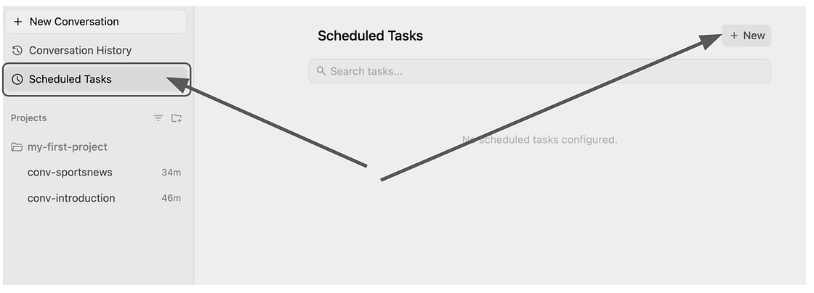
두 가지 용도
| 용도 | 예시 |
|---|---|
| 반복 작업 자동화 | 매일 아침 8시, 업계 뉴스를 모아 요약 파일로 저장 |
| 리마인더 | 매일 오후 6시, 내일 회의 안건 정리하라고 알림 |
매주 금요일 오후 3시에 실행되게 해줘라고 말하면 알아서 변환해 줍니다.크론 읽는 법 — 외울 필요 없지만, 보이면 읽을 수 있게
화면에 */20 * * * * 같은 식이 보여도 당황할 필요 없습니다. 왼쪽부터 분 · 시 · 일 · 월 · 요일 5칸이고, *는 "모두", */20은 "20마다"라는 뜻입니다.
| 표현식 | 의미 |
|---|---|
*/20 * * * * | 20분마다 (실습 5-2의 휴식 알림) |
0 18 * * * | 매일 오후 6시 정각 (실습 5-1의 회의 리마인더) |
0 15 * * 5 | 매주 금요일 오후 3시 |
0 9 * * 1-5 | 평일(월~금) 오전 9시 |
30 8 1 * * | 매달 1일 오전 8시 30분 |
Prevent Sleep·Keep In Menu Bar
옵션을 켜두면 도움이 됩니다.실습 5 · 스케줄러 등록
목표: 예약 작업 2개를 등록해 목록에 나타나는 것까지 확인합니다.
5-1. 일일 리마인더 등록 (8분)
- Schedule 화면에서
+ New버튼 클릭 - 실행 주기와 프롬프트를 입력
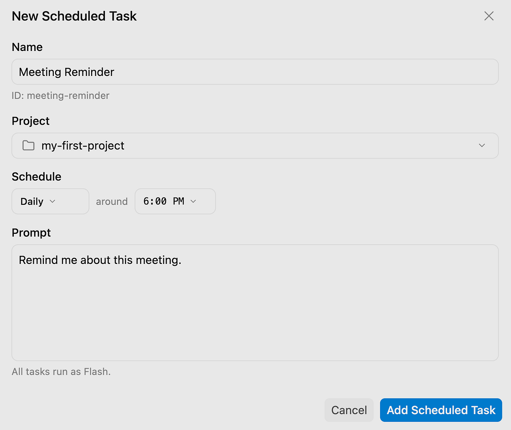
매일 오후 6시에 "내일 회의 안건을 정리하세요"라고 알려줘.Create를 누르면 예약 대기 목록에 등록됩니다.
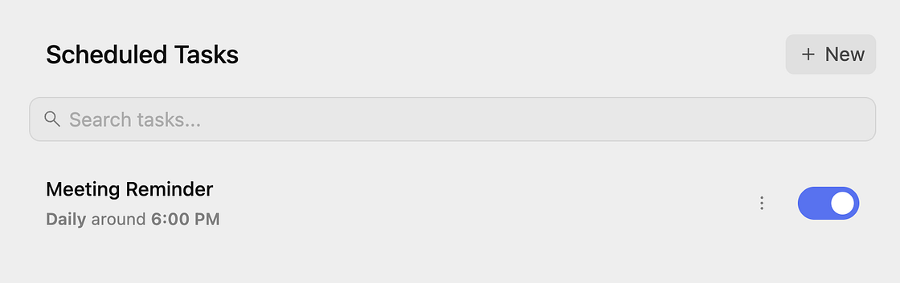
5-2. 주기적 알림 추가 (7분)
두 번째 예약을 추가합니다. 이번엔 분 단위 주기입니다.
20분마다 "잠깐 쉬었다 하세요"라고 알려줘.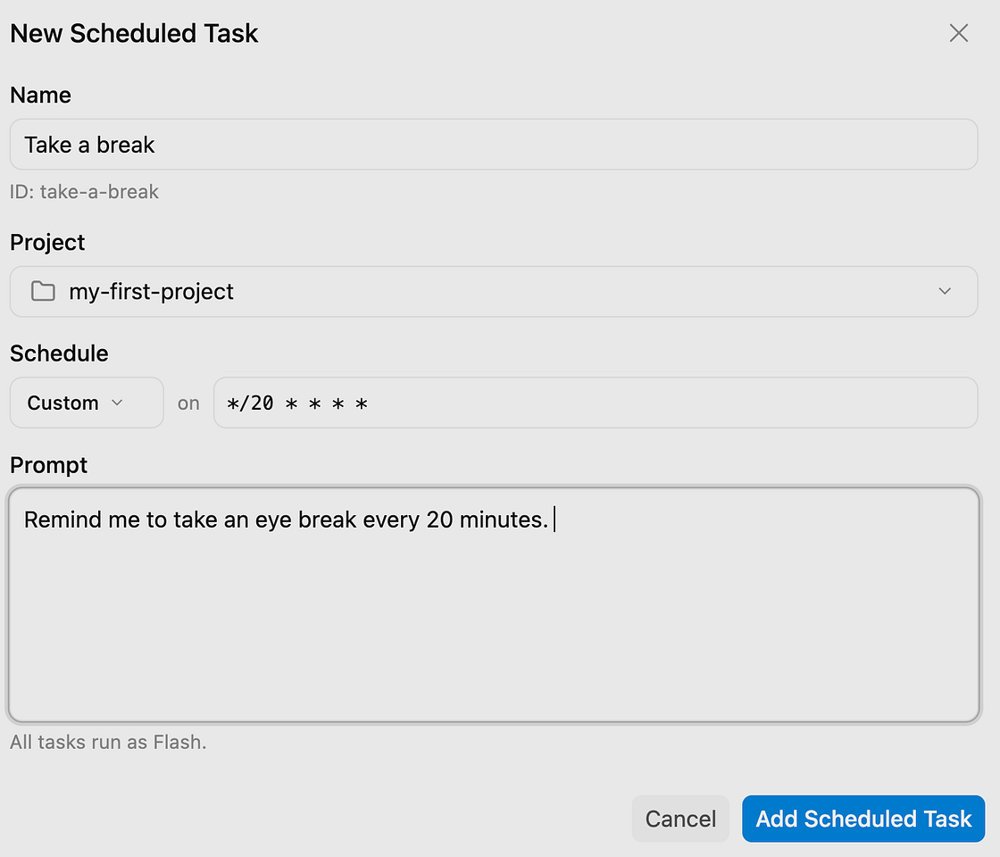
두 개가 모두 목록에 활성화되어 있으면 성공입니다.
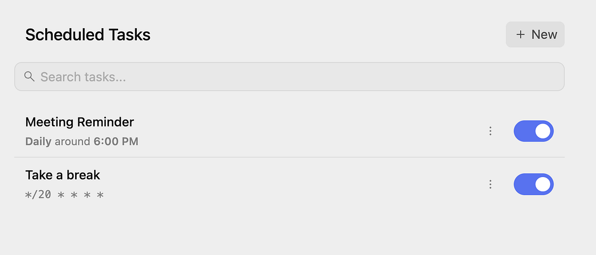
5-3. 개인 과제 — 내 업무 예약 (5분)
본인 업무에서 매일 또는 매주 반복되는 것 하나를 예약으로 만들어봅니다.
매주 [ 요일 ] [ 시각 ]에 [ 무엇을 ] 해서 [ 어디에 ] 저장해줘.- 일일 리마인더 등록 완료
- 20분 주기 알림 등록 완료
- 목록에 2개가 활성 상태로 표시됨
- 본인 업무용 예약 1개 작성
6. MCP와 주요 설정
MCP — 외부 시스템 연결
MCP는 에이전트를 외부 시스템과 연결하는 표준 규격입니다. Antigravity 혼자서는 자기 폴더 안의 파일만 다룰 수 있지만, MCP를 붙이면 법령 데이터베이스·전자공시·사내 시스템을 직접 조회해서 답을 만들 수 있습니다.
MBC 사내 MCP — 오늘 직접 써봅니다
MBC는 사내에 오픈 MCP 서버를 구축해 두었습니다. 오늘 실습에서 이 중 2개를 연결합니다.
| 서버 | 무엇을 조회하나 | 이런 업무에 |
|---|---|---|
| mbc-law | 법령 · 시행령 · 세법 · 판례 · 회계기준 질의회신 · 자치법규 | 규정 확인, 계약 검토, 방송법·저작권 근거 찾기 |
| mbc-dart | DART 전자공시 · 재무제표 · 주주현황 · 임원 보수 · 공시 이상 탐지 | 기업 취재, 경제 리포트, 협력사·경쟁사 재무 확인 |
mcp/mbc)가 추가될 예정입니다.
사내지원 웹사이트에서 자동 배포를 포함한 연동 방법이 안내될 예정이니, 공지를 확인하세요.연결 방법
MCP 서버 설정은 mcp_config.json 파일에 저장됩니다.
설정 → 맞춤설정 → MCP + 추가에서 화면으로 추가할 수도 있고,
파일에 직접 써넣을 수도 있습니다. 실습에서는 파일에 붙여넣는 방식으로 진행합니다.
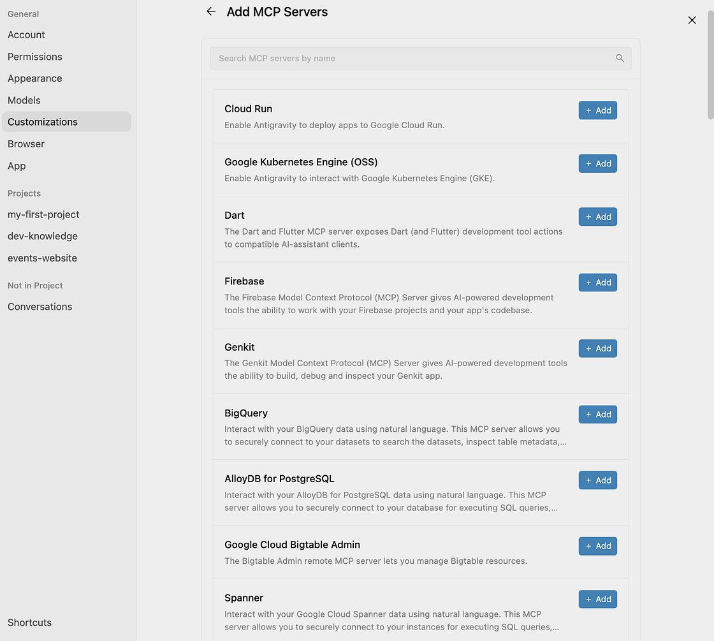
알아두면 좋은 설정
| 설정 | 기본값 | 무슨 뜻인가 |
|---|---|---|
| Outside of folders file access | Deny | 프로젝트 폴더 바깥 파일은 건드리지 않음 — 그대로 두세요 |
| Terminal Command Auto Exec | Require Review | 명령 실행 전 사용자 승인 필요 — 그대로 두세요 |
| Artifact Review Policy | Always Ask | 문서 생성·수정 시 항상 확인 — 그대로 두세요 |
| Verbose Agent Chat | — | 에이전트의 생각 과정을 보여줌. 켜두면 학습에 도움 |
| Prevent Sleep | — | 작업 중 PC 절전 방지 — 예약 작업 쓸 때 켜두기 |
| Appearance | — | 화면 밝게/어둡게 (Light / Dark) |
실습 6 · 사내 MCP 연결하고 써보기
목표: 사내 법령·공시 MCP를 연결하고, 에이전트가 공식 출처를 직접 조회해 답하는 것을 확인합니다.
6-1. 설정 파일에 서버 추가 (7분)
Antigravity 대화창에 아래를 그대로 지시하면 에이전트가 설정 파일을 찾아 수정해줍니다. 파일 위치를 직접 찾을 필요가 없습니다.
mcp_config.json 파일에 아래 두 개의 MCP 서버를 추가해줘. 기존 설정이 있으면 지우지 말고 병합해줘.
{
"mcpServers": {
"mbc-law": { "serverUrl": "https://ai-api-ext.mbc.co.kr/mcp/law/" },
"mbc-dart": { "serverUrl": "https://ai-api-ext.mbc.co.kr/mcp/dart/" }
}
}직접 편집하고 싶다면 설정 파일은 다음 위치에 있습니다.
~/.gemini/config/mcp_config.jsonmcpServers 안에 항목만 추가해야 합니다.
파일 전체를 위 내용으로 바꾸면 기존 연동이 사라집니다. 에이전트에게 맡길 때도 "병합해줘"라고 말하는 이유입니다.추가 후 설정 → 맞춤설정에서 두 서버가 켜져 있는지 확인합니다.
목록에 보이지 않으면 새로고침하거나 앱을 다시 실행하세요.
6-2. 법령 MCP 써보기 (4분)
이제 그냥 질문하면 됩니다. 에이전트가 알아서 관련 도구를 골라 조회합니다.
방송법에서 간접광고를 규정한 조문을 찾아서, 조문 번호와 본문을 그대로 보여줘.답변이 오면 2주차에 배운 검증 습관을 그대로 적용하세요 — 조문 번호가 실제로 맞는지, 본문이 원문 그대로인지 확인합니다.
6-3. 공시 MCP 써보기 (4분)
최근 3년간 이 회사의 매출과 영업이익 추이를 표로 정리해줘. 출처 공시 문서도 함께 알려줘.
회사명: (관심 있는 상장사 이름을 넣으세요)- mcp_config.json에 서버 2개 추가 완료
- 맞춤설정에서 두 서버가 활성 상태로 표시됨
- 법령 조회 질문 1회 실행, 조문 번호 확인
- 공시 조회 질문 1회 실행, 출처 문서 확인
개인 과제: 본인 업무에서 법령이나 기업 공시를 확인해야 했던 일을 하나 떠올려 질문으로 만들어보세요.
사내 MCP 도구 명세
에이전트가 알아서 고르므로 외울 필요는 없습니다. "이런 것까지 조회할 수 있구나" 정도로 훑어보고, 나중에 필요할 때 찾아보세요.
mbc-law — 법률 · 세법 · 판례 · 회계기준
| 도구 | 하는 일 |
|---|---|
search_law | 법령 검색 (법률, 시행령, 시행규칙) |
get_law_text | 법령 조문 본문 조회 |
search_tax_law | 세법 및 세무 유권해석 검색 |
get_tax_law_doc | 세법 조문·해석 문서 조회 |
search_kasb_reply | 한국회계기준원(KASB) 질의회신 검색 |
get_kasb_reply | 회계기준원 질의회신 본문 조회 |
search_decisions | 대법원 판례 및 법원 판결문 검색 |
get_decision_text | 판결문 전문 조회 |
ordinance_radar | 자치법규(조례, 규칙) 검색 및 모니터링 |
get_annexes | 법령 별표·서식 조회 |
legal_research | 특정 법률 주제 심층 리서치 |
legal_analysis | 법적 쟁점 검토 및 분석 |
discover_tools / execute_tool | 법률 전문 서브 도구 탐색 및 실행 |
mbc-dart — DART 전자공시 및 재무 분석
| 도구 | 하는 일 |
|---|---|
resolve_corp_code | 기업명으로 DART 고유번호·종목코드 조회 |
search_disclosures | 기업별 공시 보고서 검색 |
get_company | 기업 개요 정보 조회 |
get_financials | 재무제표(재무상태표, 손익계산서 등) 조회 |
download_document | 공시 원문 문서 다운로드 |
get_xbrl | XBRL 재무 데이터 추출 |
get_periodic_report | 사업보고서, 분·반기보고서 등 정기보고서 조회 |
get_shareholders | 최대주주 및 주주 현황 조회 |
get_executive_compensation | 임직원 보수 현황 조회 |
get_major_holdings | 대량보유상황보고 조회 |
get_corporate_event | 주요사항보고서(합병, 분할, 유상증자 등) 조회 |
insider_signal | 임직원·내부자 지분 변동 시그널 분석 |
disclosure_anomaly | 공시 이상 패턴 감지 |
buffett_quality_snapshot | 버핏 스타일 기업 퀄리티·재무 건전성 분석 스냅샷 |
get_attachments | 공시 첨부파일 목록 조회 |
get_securities_filing | 증권신고서 조회 |
get_financial_indicators | 주요 재무 지표(ROE, 부채비율 등) 산출 |
dart_raw | Open DART API 원시 엔드포인트 직접 호출 |
랩업 체크
오늘 배운 것을 확인해봅니다. 답을 고르면 해설이 나옵니다.
오늘의 핵심 3가지
- 말로 지시하면 결과물이 나온다 — 코드를 몰라도 됩니다. 구체적으로 말하는 것이 실력입니다.
- 아티팩트로 검토한다 — Task List로 방향을 확인하고, Walkthrough로 결과를 확인합니다.
- 최종 책임은 사람에게 있다 — AI 결과물은 초안입니다. 특히 대외 자료는 반드시 검증하세요.
교육 후 이어서 해볼 것
- 오늘 만든 개인 과제 결과물을 실제 업무에 한 번 써보기
/learn으로 저장한 규칙을 다음 주에 재사용해보기- 잘 된 사례를 부서에 공유해보기
문제 해결 (FAQ)
로그인 관련
| 증상 | 원인과 해결 |
|---|---|
| 개인 Gmail 로그인 화면이 뜬다 | 파란색 Continue with Google을 누른 경우입니다.
뒤로 가거나 앱을 다시 실행해 Use business account부터 다시 시작하세요. |
| Google Cloud 로그인이 안 된다 | 3단계에서 파란색 Continue with Google Cloud를 누른 경우입니다.
Use advanced SSO config로 가야 합니다. |
| WIF Config 입력 후 실패 | 오타 가능성이 가장 큽니다. 직접 타이핑하지 말고 복사 버튼으로 붙여넣으세요. 앞뒤 공백도 확인하세요. |
| 브라우저가 열렸는데 돌아오지 않는다 | 네이버웍스 로그인을 완료했는지 확인하세요. 완료 후에도 멈춰 있으면 Antigravity 앱 창을 직접 클릭해 전환해보세요. |
| 로그인은 됐는데 AI 기능이 실패한다 | GCP 권한(IAM)이 부여되지 않은 경우입니다. IT 담당 부서에 권한 요청이 필요합니다 — 사용자가 해결할 수 없습니다. |
| 라이선스 화면에 아무것도 안 보인다 | 라이선스 배정 문제일 수 있습니다. 멘토를 불러주세요. |
Quota pool exhausted 오류가 난다 | 예전 방식(Gemini Enterprise Plus)으로 로그인된 상태입니다.
로그아웃 후 실습 1의 순서대로 다시 로그인하세요 — 5단계에서 Other → Agent Platform을 선택해야 합니다. |
사용 중 문제
| 증상 | 해결 |
|---|---|
| 에이전트가 같은 자리를 반복한다 | 다른 방법으로 해봐 또는 지금까지 뭐가 막혔는지 설명해줘라고 요청 |
| 엉뚱한 결과가 나온다 | 대화를 이어서 고치면 됩니다. 처음부터 다시 할 필요 없습니다 |
| 파일이 안 보인다 | 프로젝트 폴더 경로를 확인하세요. 탐색기에서 직접 열어봅니다 |
| 승인 창이 계속 뜬다 | 정상입니다 — 실수를 막아주는 안전장치입니다. 내용을 읽고 승인하세요 |
/browser가 동작하지 않는다 | 조직 정책으로 차단된 상태입니다. 다른 방법을 쓰세요 |
| 예약 작업이 실행되지 않았다 | 그 시각에 PC가 켜져 있고 Antigravity가 실행 중이었는지 확인 |
| MCP 서버가 목록에 안 보인다 | 맞춤설정 화면을 새로고침하거나 앱을 다시 실행하세요. JSON 문법 오류(쉼표·괄호)도 확인 |
| MCP 조회가 실패한다 | 사내망 접속 상태인지 확인하세요. ai-api-ext.mbc.co.kr 접근이 막혔으면 IT 담당 부서에 문의 |
| 기존 MCP 설정이 사라졌다 | 파일 전체를 덮어쓴 경우입니다. mcpServers 안에 항목만 추가해야 합니다 |
/antigravity-guide를 입력해 물어보거나, 조별 멘토를 부르세요.용어집
기본 개념
| 용어 | 뜻 |
|---|---|
| 에이전트 | 지시를 받아 스스로 판단하며 여러 단계 작업을 수행하는 AI |
| 에이전틱 IDE | 에이전트가 주도적으로 일하는 개발 환경. Antigravity가 여기 해당 |
| 바이브 코딩 | 코드를 직접 쓰지 않고 자연어로 지시해 프로그램을 만드는 방식 |
| 아티팩트 | 에이전트가 남기는 사람이 읽을 수 있는 작업 기록 (계획서·보고서·화면 등) |
| Walkthrough | 작업 완료 후 무엇을 했고 어떻게 검증했는지 정리한 보고서 |
| 프로젝트 | 에이전트가 접근할 수 있는 폴더 범위와 권한 설정의 묶음 |
| 터미널 | 명령어를 글자로 입력해 컴퓨터를 조작하는 화면. 에이전트가 대신 사용합니다 |
로그인·인증
| 용어 | 뜻 |
|---|---|
| SSO | 한 번 로그인하면 여러 서비스를 함께 쓰는 통합 인증 |
| WIF | Workforce Identity Federation. 네이버웍스 로그인을 구글 클라우드가 신뢰하도록 중계하는 방식 |
| WIF Config | 로그인 4단계에서 붙여넣는 사내 인증 경로 문자열. 이 값이 있어야 네이버웍스 SSO로 연결됩니다 |
| 라이선스(플랜) | 계정에 적용된 이용 권한. 사내 PoC는 Agent Platform(사용량 기반 과금)을 사용합니다 (2026.09.17 변경) |
설정·권한
| 용어 | 뜻 |
|---|---|
| 샌드박스 | 에이전트의 명령 실행을 격리된 안전 영역으로 제한하는 장치. 실수로 시스템의 다른 영역을 건드리는 것을 막습니다 |
| 작업 폴더 | 프로젝트에 등록되어 에이전트가 자유롭게 읽고 쓸 수 있는 폴더. 그 바깥은 접근 정책(Ask/Allow/Deny)을 따릅니다 |
| Inherit General | 프로젝트 설정에서 전역(General) 설정을 그대로 따른다는 값. 프로젝트별로 다르게 지정하면 재정의됩니다 |
| 커스터마이징 | 스킬·규칙·MCP처럼 에이전트의 기본 동작을 바꾸거나 확장하는 설정의 총칭 |
| 토큰 예산 | 커스터마이징이 매 대화에 실릴 수 있는 총량 한도. 초과하면 큰 커스터마이징부터 자동으로 잘립니다 |
자동화·연동
| 용어 | 뜻 |
|---|---|
| 슬래시 명령어 | 대화창에 /이름 형태로 입력해 미리 정의된 작업을 호출하는 명령. 예: /antigravity-guide |
| 스킬 | 특정 상황에서 에이전트가 따르는 미리 만들어진 작업 절차. 슬래시 명령어로 부르거나 상황에 맞게 자동 적용됩니다 |
| 서브에이전트 | 특정 작업을 전담하는 보조 에이전트. 예: /browser로 호출하는 브라우저 서브에이전트 (Chrome 필요) |
| MCP | Model Context Protocol. 에이전트를 외부 시스템에 연결하는 표준 규격. 사내에 mbc-law·mbc-dart 서버가 구축되어 있습니다 |
| 플러그인 | 스킬·MCP 등을 묶어서 배포하는 확장 단위. Build With Google 카탈로그에서 골라 켤 수 있습니다 |
| 크론(Cron) | "매주 금요일 3시" 같은 반복 주기를 표현하는 형식. 예약 실행에서 사용합니다 |
| DART | 금융감독원 전자공시 시스템. 상장사의 재무제표·주주현황·주요사항이 공시되는 곳 |